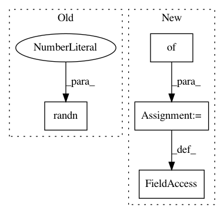

99f6a9b9b366e20ebc300fc5be904308c17c484f,src/spn/experiments/RandomSPNs_layerwise/distributions.py,RatNormal,__init__,#RatNormal#Any#Any#Any#Any#Any#Any#Any#,20
Before Change
super().__init__(multiplicity, in_features, dropout)
// Create gaussian means and stds
self.means = nn.Parameter(torch.randn(1, in_features, multiplicity))
self.stds = nn.Parameter(torch.rand(1, in_features, multiplicity))
self.min_sigma = check_valid(min_sigma, float, 0.0, max_sigma)
After Change
super(IndependentMultivariate, self).__init__(in_features, out_channels, num_repetitions, dropout)
if leaf_base_kwargs is None:
leaf_base_kwargs = {}
self.base_leaf = leaf_base_class(
out_channels=out_channels,
in_features=in_features,
dropout=dropout,
num_repetitions=num_repetitions,
**leaf_base_kwargs,
)
self.prod = Product(in_features=in_features, cardinality=cardinality, num_repetitions=num_repetitions)
self._pad = (cardinality - self.in_features % cardinality) % cardinality
self.cardinality = check_valid(cardinality, int, 2, in_features + 1)
In pattern: SUPERPATTERN
Frequency: 3
Non-data size: 4
Instances
Project Name: SPFlow/SPFlow
Commit Name: 99f6a9b9b366e20ebc300fc5be904308c17c484f
Time: 2020-04-01
Author: steven.lang.mz@gmail.com
File Name: src/spn/experiments/RandomSPNs_layerwise/distributions.py
Class Name: RatNormal
Method Name: __init__
Project Name: Cadene/pretrained-models.pytorch
Commit Name: b2074ddf9d8bc2069d66976fea58a52f40238496
Time: 2017-11-16
Author: remi.cadene@icloud.com
File Name: pretrainedmodels/nasnet.py
Class Name:
Method Name:
Project Name: streamlit/streamlit
Commit Name: 88f314bbaa2cbb7a4f2fdc624da8d06a8e1aa65f
Time: 2018-10-02
Author: thiagot@gmail.com
File Name: examples/vega_lite_example.py
Class Name:
Method Name: